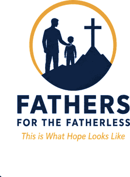
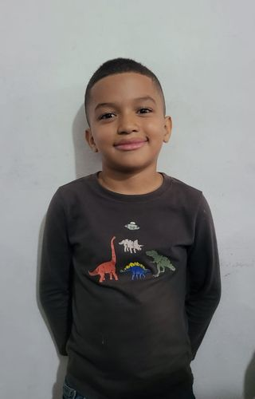
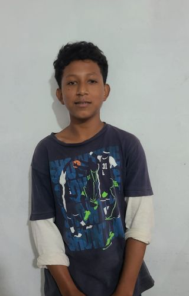
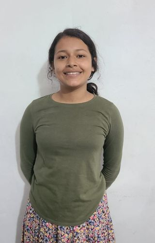
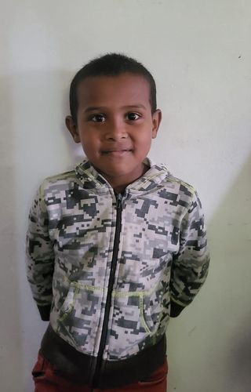
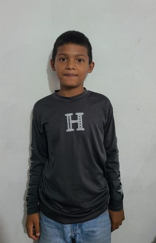
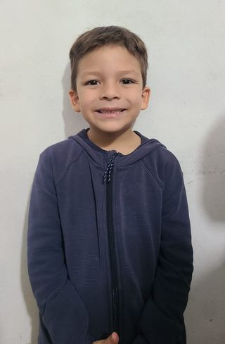
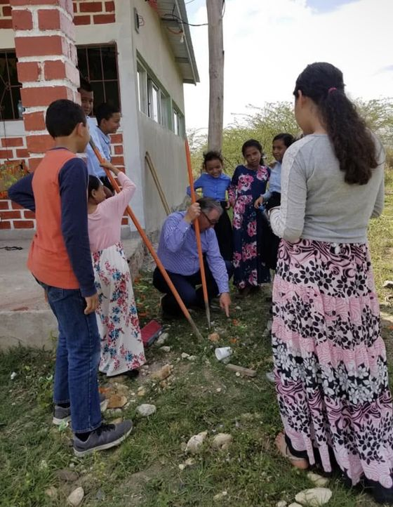
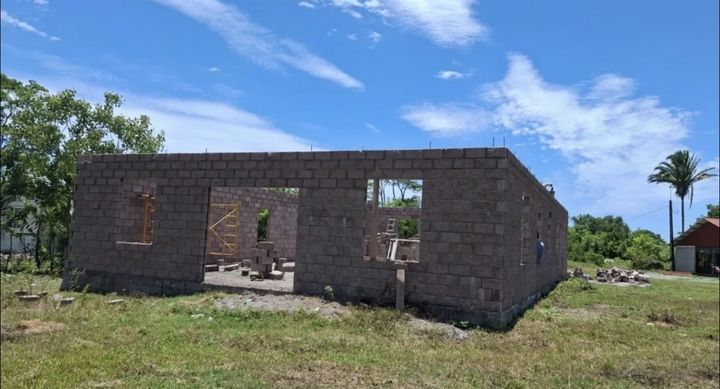

Fathers who will stand in the gap for their own homes.
Since 2006 we have been teaching the men of five Honduran churches to lead their families from the Word.







Five churches, five men who stay.
- GuaimacaBro. Andrew Finnicum, since 2010
- La CeibaBro. Edwin Rodriguez, since 2006
- TalangaBro. Misael Alvarado, since 2014
- La ErmitaBro. Cristobal Alvarado, since 2018
- DanlíJimmy Welch, since 2016

The children leading the singing at a service.
Giving pays for the teaching, and for doctor and dentist visits that families there cannot afford. Read the mission.

The tabernacle walls are up. It still needs a roof. Help finish it.
For the cost of a few coffee shop visits a month, you can make a difference.
Give to the work